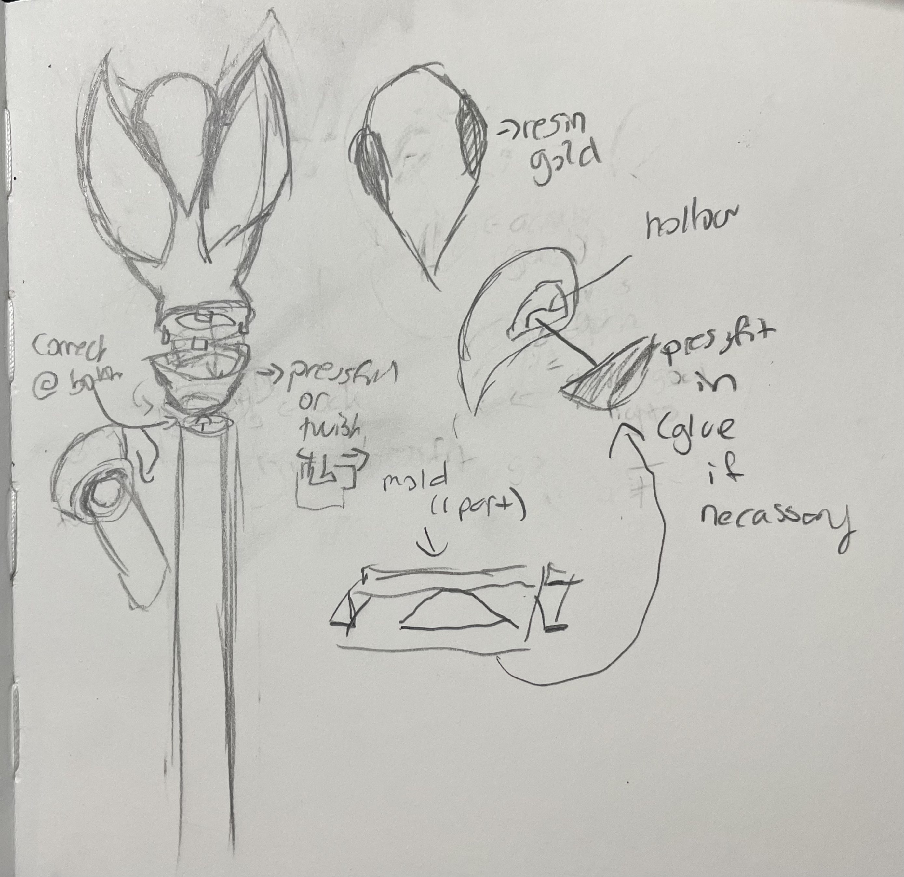

Belinda Bleeker's Final Project Proposal - Lilith Clawthorne's Staff!

For my final project I wanted to work on a cosplay I've been working on for Comic-Con 2023, cool aunt Lilith from the Owl House. Specifically I wanted to try making her palisman/staff. This would be used in my Cosplay and possible other cosplays of the same character. Lilith's palisam/staff is pictured below first from the show , then one example as just a 3D print , and then one as a finished prop
{kind=link}


I want to make one, with some slight changes, eventually I would love to add lights so I want to make a prop that I can add to later. This means that the 3D print top needs to be hollow, separate from the staff, and have empty space for the eyes. Here are some of my concept sketches.
 This was my first initial ideas. I further refined them in my second sketch.
This was my first initial ideas. I further refined them in my second sketch.
 This is my second idea, which once I started modeling seemed to be a bit too difficult.
This is the final idea sketch I came up with. Much more simplified
This is my second idea, which once I started modeling seemed to be a bit too difficult.
This is the final idea sketch I came up with. Much more simplified
For this project I will use rhino, 3D printing, molding, pressfit parts, and adding a stock part. Here is a list of the tasks: 1. Find .Stl of palisman and edit in Rhino. The edit should a. make an open space for the eyes b. add connector piece (press fit) 2. Design pieces for eyes. 3. Design/create second piece to press fit to top that connects with pvc pipe. 4. Print pieces & make touch-ups (check that everything fits right) 5. Fit PVC pipe in second piece 6. Cast and mold for eyes 7. Pressfit (or glue if necessary) resin eye pieces to 3D print Stretch Goals 8. Paint the 3D print and staff (excluding eyes). 9. find a light to place in the hollow part of the 3D print.
My timeline is set to start on Tuesday the 22nd with it being finished on the 6th. Give myself 1-3 Days to edit the .stl files. This includes the pressfit eye pieces, the main piece, and if time allows the piece to connect to a pvc pipe. I must have the pressfit sections work, if I can't make it hollow by mid-day 25th I will scrap the laser cut idea. Next I 3D printing and finishing should take hopefully at most 3-4 days. They key things that need to work is 1. the top piece prints well and 2. the pressfit sections work. If my at home printer doesn't work (deadline is the 28th) I will go the The 8 or The Mill to print them there. I will go to school first thing in the morning that monday and spend as much time a possible to complete it. If things go to plan the 28th-29th should be finishing up parts, sanding ect. I will make a sylicone mold of the two eye pieces I would have printed using this method. This should take max one day. If it isn't done in one day I will laser cut them in a pressfit pattern which I will lasercut on the 30th. If the molds are done by the afternoon I will use casting resin in a vacuum chamber. I will give myself 1-2 days to complete this. I will test the fit as soon as possible after each cure. If I cannot create satisfactory molded pieces I will laser cut a piece of acrlyic to fit in the eye hole. The section is curved so I will have to let the alignment be off if this is the case. If I go this route I will laser cut the eye pieces with gold acrlyic at The 8 or The Mill. I will bring the 3D printed piece to test the fit there so I can adjust and try again on the same day. If these steps are not completed before the 30th I will ignore doing the following stretch goals. Spray painting the pieces white or gold the 5th or 6th. Making an end piece for the staff
A list of materials and when I need them by Have as of the 22nd: 3D printer, filament (have plent of already) 3D model ( here Free) 26th: silicone kit (have from class), resin kit ($30.48 already purchased), 1" PVC pipe (around $8.20 (McLendon's - cut size in store - already purchased) XTC-3D - High Performance 3D Print Coating - 6.4 Ounce Unit ($24.69 Amazon - purchased) gold resin color ($10.49 (purchased) Gold acrlyic as a back-up ($15+ based on website (Tap Plastic). 30th: Gold ($7.49) and White spray Paint ($7.99).
That is my current plan.
Return to index